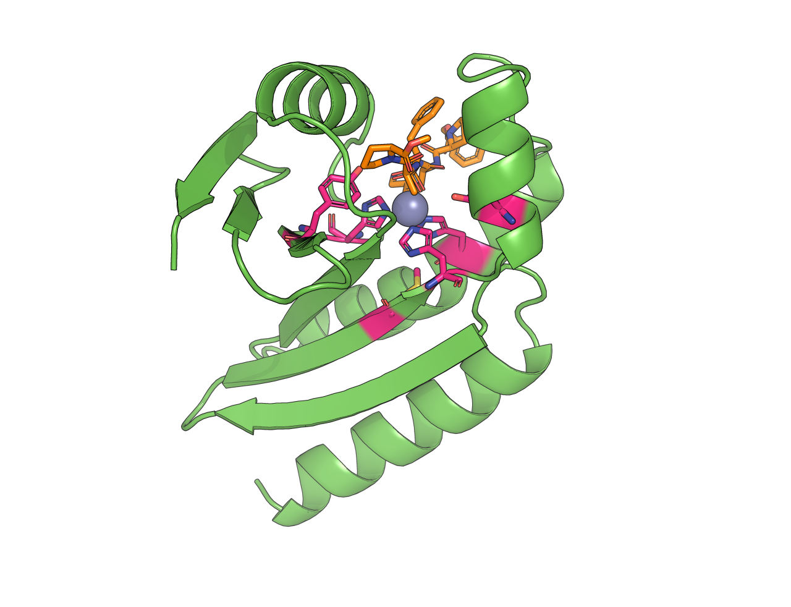
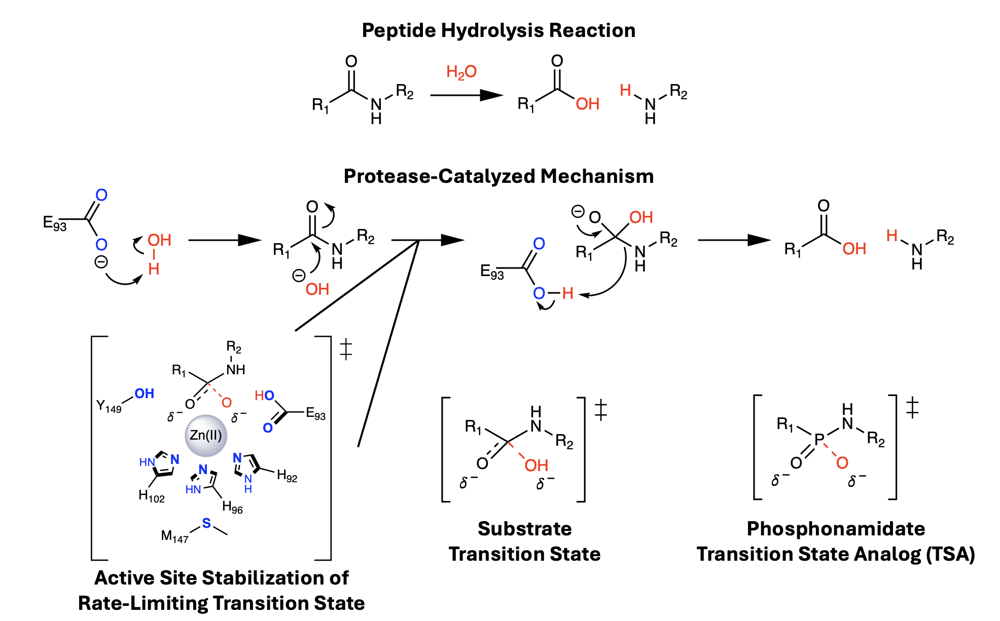
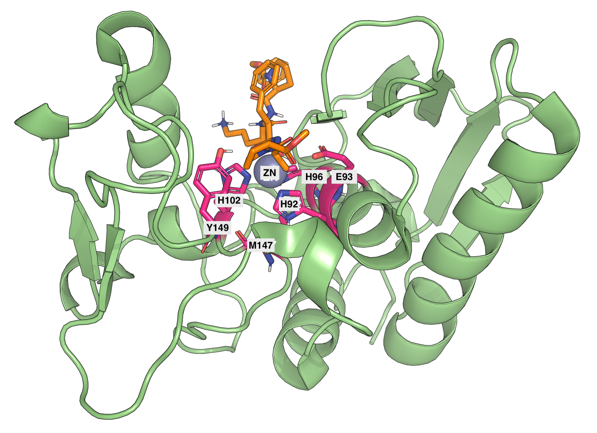
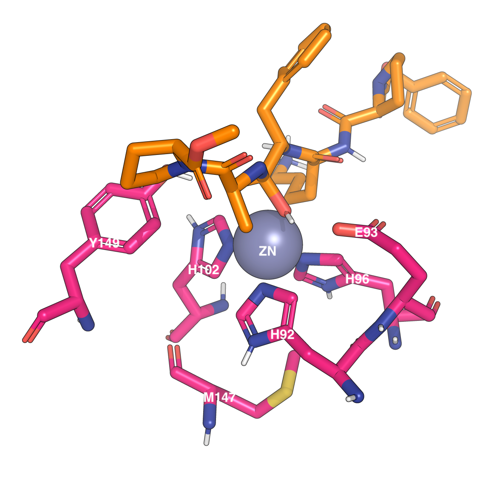
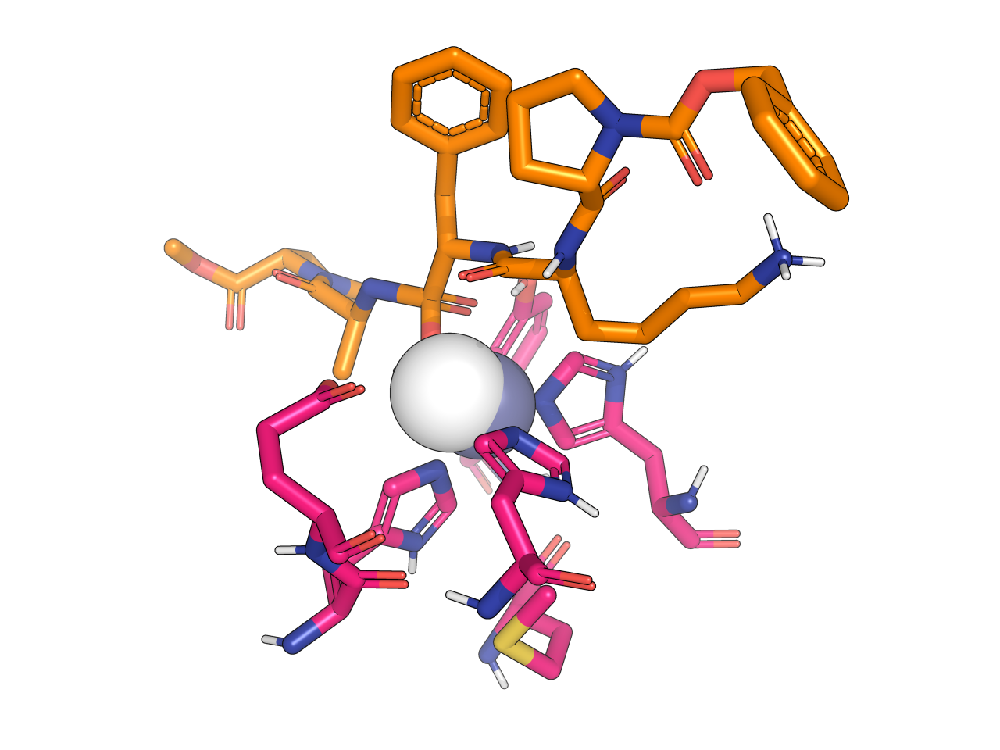
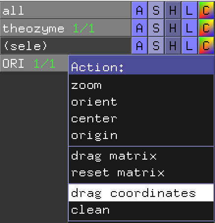
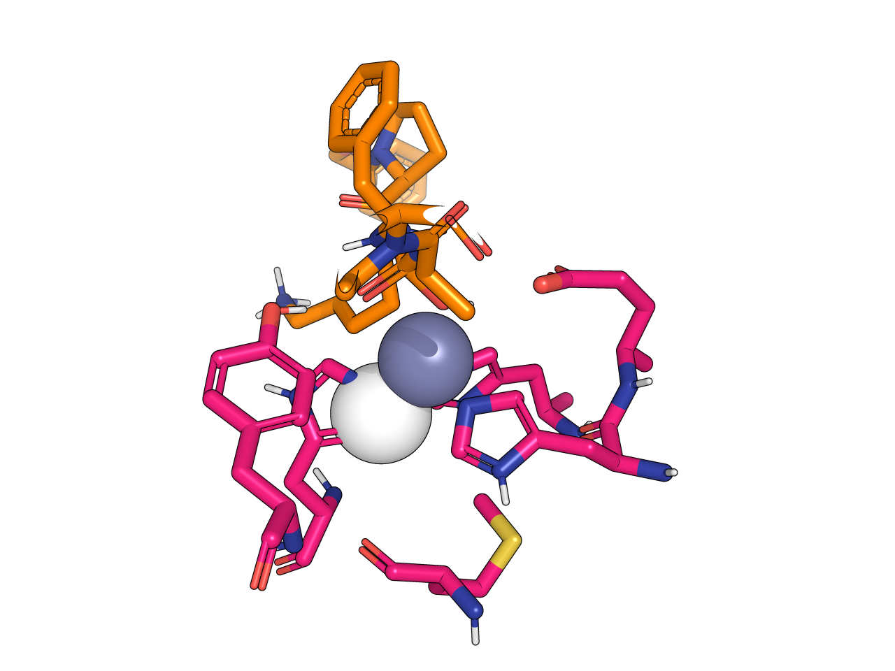
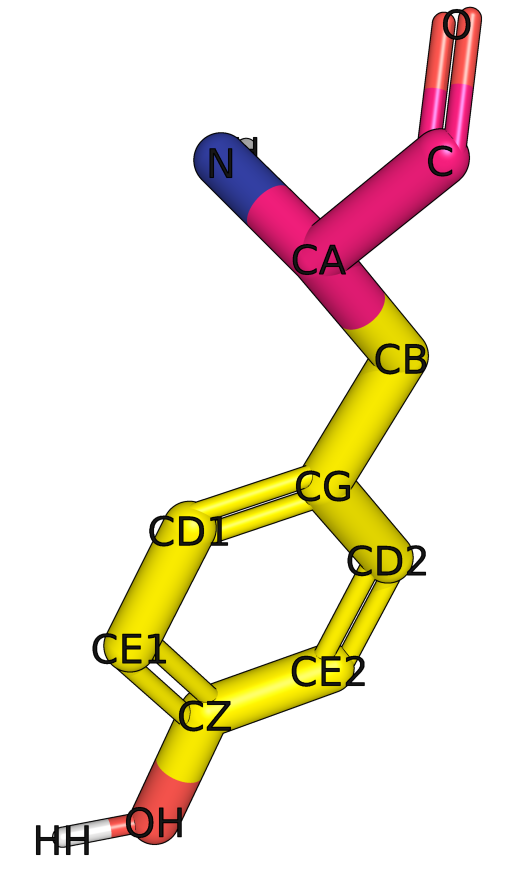
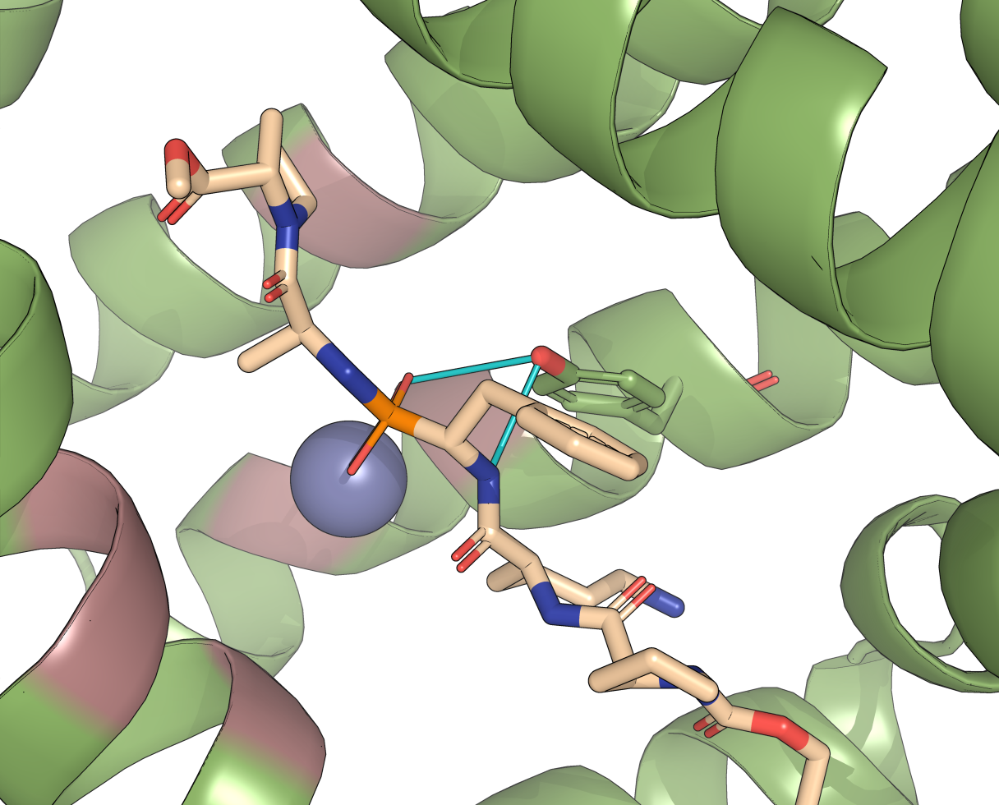
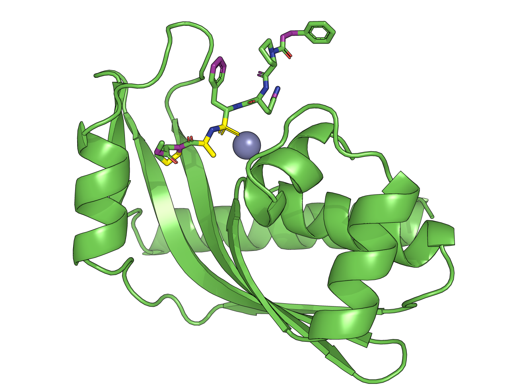

Advanced Enzyme Design with RFdiffusion3¶
Table of Contents¶
Introduction¶
In this tutorial, you will learn how to design a de novo enzyme by generating novel protein backbones that scaffold a pre-defined active site using RFdiffusion3 (RFD3). More specifically, you will design a de novo metalloprotease for a system comprised of a phosphonamidate transition-state analog, zinc cofactor, and six catalytic residues shown below.


Example structure that can be generated by following this tutorial. Catalytic residues are in pink, the ligand is in orange.¶
General procedure:
Crop an initial system to form a theozyme
Determine which configuration options to use for your designs and create an input JSON/YAML file
Run RFD3 on your own computing systems
Analyze the outputs
Determine the impacts of adding hydrogen bond and relative accessible surface area (RASA) conditioning
Before We Get Started…¶
This tutorial does not cover installing RFD3. If you do not already have RFD3 installed on your system, see the Getting Started section in the RFD3 README and our guide for Installing RFdiffusion3 on Unix Systems.
You will also need a molecular visualization tool for manipulating our starting structure. Here we will use PyMOL, however other visualization tools, such as UCSF Chimera, can be used instead.
RFD3 is optimized to run on GPUs, specifically NVIDIA GPUs. It is recommended that you have at least 16 GB of GPU memory when running inference for this tutorial. For your own projects, you may need more or less depending on the size of the system you are working with.
Prerequisites¶
RFdiffusion3 installed and working
Familiarity with command line
Protein visualization software, here we will use PyMOL
Recommended:
Setup¶
This tutorial will walk you through the creation of all the files that you will need to generate enzyme designs with RFD3. However, example files can be found here.
Designing Metalloproteases¶
Creating a Theozyme¶
Structural inputs to RFdiffusion3 typically either come from a structure-prediction model (e.g. AlphaFold3) or from an experimental structure reported in resources like the RCSB Protein Data Bank (PDB).
However, for enzyme design our goal is to stabilize the transition state of the reaction involving our ligand and the key catalytic residues it interacts with. If the PDB contains a structure with a bound transition-state analog (a mimic of the transition state), we can use this structure as a starting point for our enzyme design task.
For this tutorial, we are designing proteins to scaffold the active site for a protease-catalyzed peptide hydrolysis reaction:


For the metallohydrolase we are designing in this tutorial, we will start with a phosphoester. These are known for being transition-state analogs for ester- and amide-cleaving metallohydrolases due to their tetrahedral geometry and localized negative charge. A careful search of the RCSB Protein Data Bank (RCSB PDB) leads us to astacin with a transition-state analog inhibitor (1QJI), a phosphonamidate transition-state analog.
Determining the Catalytic Residues¶
Now we need to determine which residues in this protein are important for stabilizing the transition state. For this type of catalytic reaction, it is known that the three histidine residues (H92, H96, and H102 in 1QJI) that surround the zinc ion are crucial for chelation. The glutamic acid residue whose side chain interacts with the zinc ion (E93) is also known to serve as the general base for this hydrolysis reaction. The article that published the 1QJI structure also reveals that Y149 and M147 may be necessary for this reaction. Y149 stabilizes the oxyanion that is formed during the reaction and M147 may be important for conserving the motif that sits below the active site.
So for this example, we will be using 6 catalytic residues to create our theozyme along with the ligand and the zinc ion: H92, E93, H96, H102, M147, and Y149. You can see these residues highlighted in the structure below:


Image of 1QJI with the catalytic residues highlighted in pink, the zinc ion is shown in gray, and the astacin ligand is in orange.¶
Now that we’ve identified the catalytic residues, we can crop our structure to only include these residues, the zinc ion, and the ligand (labeled ‘PKF’ in the structure from the PDB), resulting in the theozyme shown below:


The structure we will use as input to RFD3. The catalytic residues are pink, the zinc ion is shown in gray, and the astacin ligand is orange.¶
For how to crop and save structures in PyMOL, see the ‘Motif Preparation’ section of the Intermediate Enzyme Design Tutorial. You can compare your result to the theozyme.pdb file provided in the RFD3 documentation.
Make sure to save this structure as a PDB for use in the next section.
Adding an ORI token¶
ORI (origin) tokens allow you to specify where the center of mass of the designed portion of your protein should approximately be. It can be used to have greater control over the interactions between the designed and input portions of your final structure as shown in Atom-level enzyme active site scaffolding using RFdiffusion2. It can be particularly important for enzyme design as it can be used to guide the approximate orientation of how the generated protein should bind the ligand.
For our metalloprotease designs, we can start by assuming that the ORI token should be placed near the zinc atom since it should be relatively buried in the enzyme structure. You could just determine the coordinates of the zinc atom and use these for the ORI token input. However, for this tutorial let’s say that we know we want the ORI token to actually sit slightly below the zinc atom. We could determine the coordinates of this ourselves, but often times it is helpful to determine the placement of our ORI token visually.
First, let’s add a pseudoatom to our PyMOL session with our theozyme structure. We don’t know where to place this pseudoatom, and it’d be best to place it close to our structure so that we don’t need to hunt for it in our PyMOL workspace. Let’s figure out the placement of our zinc atom and then place our pseudoatom near it. To determine the coordinates of the zinc atom in PyMOL, select the zinc atom and run the following in the command prompt:
iterate_state 1, sele, print(name, x, y, z)
Now let’s add the pseudoatom via the PyMOL command prompt:
cmd.pseudoatom(object="ORI", pos=[17.79, 24.45, 22.30], elem="ORI", name="ORI", vdw=1.5, hetatm=True, chain='z', segi='z', resn="ORI"); cmd.show("sphere", "ORI");
This command:
Sets the name of the object that appears in the right-hand sidebar in PyMOL.
Sets the position of the pseudoatom, here we have simply added 1Å in the z direction from the zinc atom coordinates to not have the object completely overlap with the zinc atom.
Adds labels to the token.
Sets the Van der Waals radius of the atom. (This will make sure the atom is large enough to easily see.)
Adds it to a new ‘z’ chain and segment.
Sets this new object to appear as a sphere.
Your PyMOL window should now look something like:


Initial placement of the ORI token (white sphere). The ligand is shown in orange, the catalytic residues in pink, and the zinc ion in gray.¶
Now we can move the token around by hand by using the right-hand menu. Select the A(ction) menu for the ORI object and select drag coordinates.


Right-hand panel in PyMOL with the action menu for the ORI object open. The ‘drag coordinates’ option is highlighted in white.¶
You should now be able to move your pseudoatom by holding shift while clicking on then dragging the pseudoatom with the middle button on your mouse. This may vary depending on your PyMOL version and OS. Your final ORI location should lead to a structure that looks approximately like:


Final location of the ORI token relative to the theozyme structure. The ORI token is shown in white, the catalytic residues in pink, the zinc ion in gray, and the ligand in orange.¶
Once you have the ORI token in place, you can follow the previous instructions to have PyMOL print out its coordinates. Here our ORI token coordinates ended up being [17.349, 23.971, 19.174]. You will need to know these for setting up your configuration file.
Preparing the Configuration File¶
The main inputs to RFdiffusion3 are a structure file (optional) and a JSON/YAML file (required) that specifies the constraints you want to apply to the diffusion process. Here we will be using the JSON file format, however the same options can be used with the YAML format.
Important
We will only be discussing the options relevant to this tutorial example. For a list of all constraints you can apply to RFdiffusion3, see the Input Specification Fields list.
Open a new file called metalloprotease_rfd3_input.json in a text editor of your choice. Add the following and ensure all the brackets are closed:
{
"test1": {
"input": "<path/to/input/>theozyme.pdb",
"ligand": "ZN,PKF",
"length": "120-150",
"unindex": "A92,A93,A96,A102,A147,A149",
"select_fixed_atoms": {
"A92": "NE2,CD2,CG,CB,ND1,CE1",
"A93": "OE1,OE2,CD,CG",
"A96": "NE2,CD2,CG,CB,ND1,CE1",
"A102": "NE2,CD2,CG,CB,ND1,CE1",
"A147": "SD,CE,CG",
"A149": "OH,CZ,CE1,CD1,CE2,CG,CB,CD2"
},
"ori_token": [
17.349,
23.971,
19.174
],
"allow_ligand_on_existing_chain": true
}
}
Important
Make sure to replace <path/to/input/> with the actual path to your theozyme.pdb file. This path can be relative to where you are saving your JSON file or absolute.
Note
All of the options used here have been discussed in the introductory and intermediate enzyme design tutorials. We will only discuss the choices unique to this tutorial here, please refer to them and the Input Specification documentation for more information.
For examples of the JSON format, see the Examples.
Here we specify both the zinc atom (ZN) and the astacin molecule (PKF) as ligands because we want RFD3 to be aware of them as it designs the protein structure. Note that the names given need to match what is in your PDB/CIF file.
The length setting is telling RFdiffusion3 to design a protein that is between 120 and 150 amino acids in length, inclusive of the input residues. We are not using a contig setting here because we are using other ways to specify the designed or input portions of our structure.
We are unindex-ing all of the input residues here because their index in the final protein structure is not important, only their orientation with respect to each other, the ligand, and the zinc cofactor matters.
Which brings us to the select_fixed_atoms setting. You can see the atom names for each residue in the PDB/CIF file for the input structure and/or view them on PyMOL using its labeling functionality. You’ll notice that all of the atoms specified here are from the side chains of the residues. For this design problem, we want to keep the backbone position flexible to avoid overconstraining the designed protein. Any atoms not listed are free to be moved by default. Only the positions of the side chain atoms relative to the ligand and cofactor are important for enzymatic activity.


Example residue (Y149) with the atoms being held fixed highlighted in yellow.¶
Important
Never specify hydrogen atoms in your constraints for RFdiffusion3. RFD3 strips all hydrogen atoms from the input (residues, ligands, cofactors, etc.) during preprocessing.
Last, but not least, we specify the ORI token we discussed at the end of the last section. Feel free to try various ORI token locations and see how they impact your results.
Running RFdiffusion3¶
Once the input structure and JSON/YAML file have been prepared we can run RFD3. The simplest possible command to do so is
rfd3 design out_dir=</path/to/outputs/> inputs=</path/to/inputs/>metalloprotease_rfd3_input.json
This will generate 8 designs. If the output directory that you specify does not exist, RFD3 will create it.
However, for this tutorial we recommend changing some of the default settings for how RFD3 runs:
rfd3 design \
out_dir=<path/to/outputs/> \
inputs=<path/to/inputs/>metalloprotease_rfd3_input.json \
skip_existing=False \
dump_trajectories=True \
prevalidate_inputs=True \
diffusion_batch_size=4 \
n_batches=6 \
inference_sampler.use_classifier_free_guidance=True \
inference_sampler.s_jitter_origin=1.5 \
seed=42
Here is a brief description of what each of these additional settings are changing:
skip_existing=Falsetells RFD3 to overwrite any existing files in the output directory that would have the same name as those that would be created. This isTrueby default to avoid re-running a calculation you already have results for.dump_trajectories=Truewill generate two trajectory files (noisyanddenoised) that will show different aspects of the diffusion process. See the small molecule binder design tutorial for a discussion of these files. Note that these files can take up a bit of space on your machine.prevalidate_inputs=Truewill check your JSON/YAML file for any formatting issues.diffusion_batch_size=4changes the diffusion batch size from 8 to 4, lowering the default batch size can help if you run into GPU memory errors.n_batches=6run 6 batches of RFD3 instead of 1, for a total of 24 designs. The total number of designs you want to generate will depend on your design needs.inference_sampler.use_classifier_free_guidance=Trueturns on classifier free guidance so that the model learns to predict the denoised structure with and without some of the conditioning features. It results in better adherence to your input constraints at the cost of lower diversity in the designed structures.inference_sampler.s_jitter_origin=1.5adds a small amount of positional noise to the ‘motif’, the fixed portions of the structure that were given to RFD3 as input. Useful for exploring how the protein scaffold can orient around the active site.seed=42sets the seed to increase the reproducibility of results between RFD3 calculations. As of the publication of this tutorial, setting the seed does not result in fully deterministic results – they will still be slightly different between runs.
Feel free to reduce the number of batches or batch size if you have limited GPU resources.
You can learn more about these settings and other possible options here.
Analyzing the Outputs¶
You can find a set of example outputs with the tutorial files. These files will not completely match what you produce.
You should see 4 types of files for each design (96 files total) in your output directory. Each design should have:
<prefix>_model_<N>.cif.gz: The final structure of the given design.<prefix>_model_<N>.json: A JSON file containing quality metrics, index mapping, the full input specification, and sampler parameters for the design.<prefix>_denoised_model_<N>.cif.gz: This trajectory file shows what the diffusion network thinks the final clean structure will be at each timestep. The input motif is not held fixed in this view. Can be used to see what the model ‘learned’ at each step as it is easier to watch the secondary structure emerge during the diffusion process.<prefix>_noisy_model_<N>.cif.gz: A trajectory that shows how the diffusion process actually progressed while the input motifs are held fixed. Can be used to verify motif integrity.
Let’s go through the outputs associated with one of the designs (all files can be found here) to show some of the ways one might analyze the outputs from RFD3.
Final structure¶
First, open the .cif.gz file in PyMOL. If you are using the provided tutorial files your structure should look like this:
Example structure that can be generated from the JSON script and CLI settings shown in this tutorial.¶
Here is what we are looking for:
Overall fold. Does the protein form a compact, well-folded structure? Is the active site located in a cleft or pocket, as you would expect for an enzyme?
Catalytic geometry. Are the fixed atoms (H92/E93/H96/H102/Y149/M147) in their expected positions relative to the Zn(II) ion and the astacin ligand? Do the key interactions look reasonable? (You can find the new residue numbers for the catalytic residues in the
diffused_index_mapsection of the design’s JSON output file.)Backbone connectivity. Does the backbone trace smoothly through the structure without obvious clashes or unnatural loops?
Active site accessibility. Is the ligand reasonably accessible from the protein surface? A completely buried ligand may be problematic depending on the application.
Tip
When viewing multiple designs in PyMOL, you can use the alignto command to roughly align all of the structures. Keep in mind that the residue numbers will vary between each design.
Output JSON¶
Next let’s inspect the JSON files. The first section of the JSON file includes the diffused_index_map which shows where any input residues have ended up in your design. The indices on the left of the colon are from your input structure, the right are where these residues are in your final design.
The next section is the metrics section that includes many values that are automatically calculated by RFD3, only a few of which we will discuss here. You can see more details about all of these values in the Output Metrics documentation.
For this type of enzyme design problem, you will likely care about:
insertion_rmsd: measures how well the unindexed motif was placed into the generated backbone.join_point_rmsd: measurement of how well the input motif connects to the generated scaffold.n_conjoined_residues: the number of motif residues whose atoms could not be confidently matched to a single diffused residue.n_chainbreaks: the number of chainbreaks in your system, here we want none.n_clashing.interresidue_clashes_w_backbone: number of inter-residue atom pairs closer than 1.5 Å.n_clashing.interresidue_clashes_w_sidechain: the number of clashes between sidechains.n_clashing.ligand_clashes: number of clashes between the design and the ligand.non_loop_fraction: fraction of residues in a recognizable secondary structure rather than in a loop.
The JSON output file then ends with specification, ckpt_path and seed sections that will help you recreate this inference run.
Trajectory Files¶
Trajectory files are typically not necessary for filtering your designs and creating them roughly doubles the size of your output. However, they can be useful for diagnosing:
a batch that is failing consistently:
If it fails at the end, something is off in the final refinement of the structure.
If it never converges, the constraints need to be changed.
a suspiciously good design where the scaffold collapsed onto the motif late in the diffusion process.
a fun video/GIF to use in a talk or demonstration.
Filtering Script¶
While looking at these files is instructive, it is impossible to do for the tens, hundreds, or even thousands of designs you might generate for your research projects. You can instead write a simple python script to filter these designs based on the various metrics that you care about.
Here’s an example of a simple filtering script:
import json, glob
# sort the files by name and print a header
jsons = sorted(glob.glob("outputs/*_model_*.json"))
print(f"{'File':<45} {'RMSD':>6} {'Join':>6} {'Breaks':>6} {'Clashes':>7} {'SS%':>5} {'Nres':>5}")
print("-" * 85)
# print the below metrics for each file
for path in jsons:
with open(path) as f:
d = json.load(f)
m = d["metrics"]
name = path.split("/")[-1].replace("rfd3__1qji__ZnProtease_HEHHMY_", "")
print(f"{name:<45} "
f"{m['insertion_rmsd']:6.3f} "
f"{m['join_point_rmsd']:6.3f} "
f"{m['n_chainbreaks']:6d} "
f"{m['n_clashing.interresidue_clashes_w_sidechain']:7d} "
f"{m['non_loop_fraction']:5.2f} "
f"{m['num_residues']:5d}")
# filter based on hard-coded cutoffs and values
for path in jsons:
with open(path) as f:
d = json.load(f)
m = d["metrics"]
if (m["insertion_rmsd"] < 0.5
and m["n_chainbreaks"] == 0
and m["n_clashing.interresidue_clashes_w_sidechain"] == 0
and m["n_clashing.ligand_clashes"] == 0
and m["non_loop_fraction"] > 0.6):
print(f"PASS: {path}")
It is still highly recommended that you look at any of your passing designs in PyMOL after a quantitative filter. Some will still have issues that will not be captured by the metrics. For example, for this type of enzyme design problem, we will want relatively compact structures.
Note
All files included in the example files for this tutorial have passed this filtering script.
Advanced Input Specifications¶
The process discussed thus far in the tutorial shows the input specifications that will be generally useful for any enzyme design task. Here we will look at the addition of two more categories of input specification: hydrogen bond conditioning and relative accessible surface area (RASA) conditioning.
Hydrogen Bond Conditioning¶
Important
You must have HBPLUS installed on your system as described in the RFD3 README to run RFD3 with hydrogen bond conditioning.
The select_hbond_donor and select_hbond_acceptor input specification options allow you to tell RFD3 which specific atoms in your input structure should be used as hydrogen bond donors and acceptors, respectively, in your final design. The addition of these parameters can help with the binding specificity of your designed enzyme structures.
You specify the atoms to use for the hydrogen bond donor/acceptor via a dictionary. If you would like to see the impacts of adding hydrogen bond conditioning to the design task described in this tutorial add the following to your JSON file:
"select_hbond_acceptor": {
"PKF": "O4,O6,O7"
},
"select_hbond_donor": {
"PKF": "N2,N4,N20"
}
You will see some new metrics in your output JSON file:
"donor_atom_names": [
"N4_PKF_148",
"OH_TYR_84",
"ND1_HIS_119",
"OH_TYR_81"
],
"acceptor_atom_names": [
"OH_TYR_59",
"ND1_HIS_119",
"O6_PKF_148",
"OH_TYR_84",
"OH_TYR_81"
],
"hbond_connections": [
"OH_TYR_84-O6_PKF_148",
"OH_TYR_81-ND1_HIS_119",
"OH_TYR_84-OH_TYR_59",
"ND1_HIS_119-OH_TYR_81",
"N4_PKF_148-OH_TYR_84"
],
"correct_donor_percent": 0.3333333333333333,
"correct_acceptor_percent": 0.3333333333333333,
"num_hbonds": 5.0
The hbond_connections section shows the hydrogen bonds that are present in the design. Here is a visualization of the two that contain a correct donor or acceptor:


Hydrogen bonds between PKF and Y84 highlighted in blue.¶
You can find an example output from the addition of these diffusion constraints here. The images and metrics in this section come from the provided example output.
RASA Conditioning¶
Relative accessible surface area (RASA) conditioning allows you to tell RFD3 how exposed to the solvent or buried in the designed structure you want portions of your input structure to be in your final design. This is particularly useful in enzyme design as you will want certain parts of the substrate to be enclosed by the protein while others should extend outside of the active site cleft.
There are three input parameters that are used to control RASA conditioning in your design:
select_buried— atoms that should be surrounded by protein (low solvent accessibility)select_exposed— atoms that should be accessible to solvent (high solvent accessibility)select_partially_buried— atoms with intermediate solvent accessibility (less commonly used)
The specific atoms you want buried, exposed, or partially buried are specified in the same format as for select_fixed_atoms. Here is an example of what these settings could look like for the design example discussed in this tutorial:
"select_buried": {
"ZN": "ZN",
"PKF": "O5,P1,O6,C28,C29,C33,C36"
},
"select_exposed": {
"PKF": "N5,C19,O2,C2,O8,C23,C24,C31,O3"
}
The buried atoms were chosen because we want to bury the zinc ion and the atoms near the reactive center of PKF. These are directly involved in the catalytic mechanism so they should be enclosed by the protein. The atoms on the peptide tail of PKF, meanwhile, should be exposed as they would naturally protrude from the binding cleft in a real enzyme-substrate complex.


Example output for this calculation with the PKF atoms marked to be buried in the structure highlighted in yellow and the PKF atoms marked to be exposed from the structure are in purple.¶
You can find an example output from the addition of these diffusion constraints here.
You can find an example output from a design that uses both hydrogen bonding and RASA conditioning here.
Conclusion¶
You have now set up an RFD3 calculation and successfully designed enzymes based around a theozyme created from a known structure. While the options discussed here are particularly useful in enzyme design projects, RFD3 has many more that you can explore by looking at RFdiffusion3 — Input Specification & Command-line arguments.
Glossary¶
Catalytic Residue¶
Catalytic residues are amino acids known to be crucial for the enzymatic activity of a given reaction. They can either directly interact with the molecule the enzyme interacts with, or indirectly support the stability of the transition state of the ligand.
Chelation¶
Chelation describes a type of interaction between ligands and metal atoms that form a ring structure.
Cofactor¶
A cofactor is a non-protein molecule that binds to an enzyme to help it function.
Motif¶
The input structure to RFD3 that designs are generated around.
ORI Token¶
The ORI token is the user-specified center of mass of the structure designed by RFD3. It gives the user some control over the interactions between the designed and input portions of the final structure.
Theozyme¶
A theozyme is a small structure formed from the transition state structure of a ligand and any catalytically important residues, atoms, etc. that are necessary to achieve a given catalytic reaction. It is the input structure for enzyme design calculations and can be created from known enzyme structures or via quantum mechanical methods.
Transition State Analog¶
A transition state analog is a compound that resembles the transition state of a substrate molecule in an enzyme-catalyzed reaction.
Resources and References¶
The procedure described here follows the approach discussed in Kim, D. et al. (2025) and Chen, A. et al. (2025)